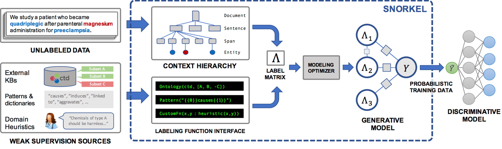
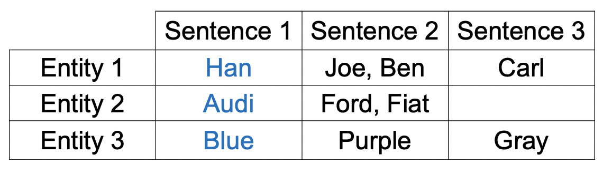
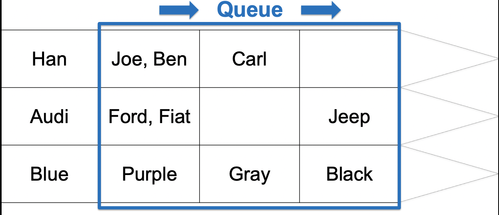
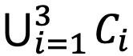
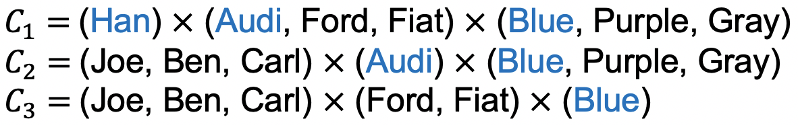

Leadership Alliance · 2018
Weakly-Supervised Multi-Sentence Relation Extraction
We extend Snorkel to cross-sentence relations using multi-sentence dependency paths with far less annotation.
University of Illinois at Urbana-Champaign · Stanford University

Overview
Weak supervision beyond single sentences.
Most relation extraction models operate on single sentences. We build a multi-sentence dependency heuristic that spans context windows, enabling weak supervision over longer contexts and larger corpora.
Method Sketch
Heuristics and structural signals.



